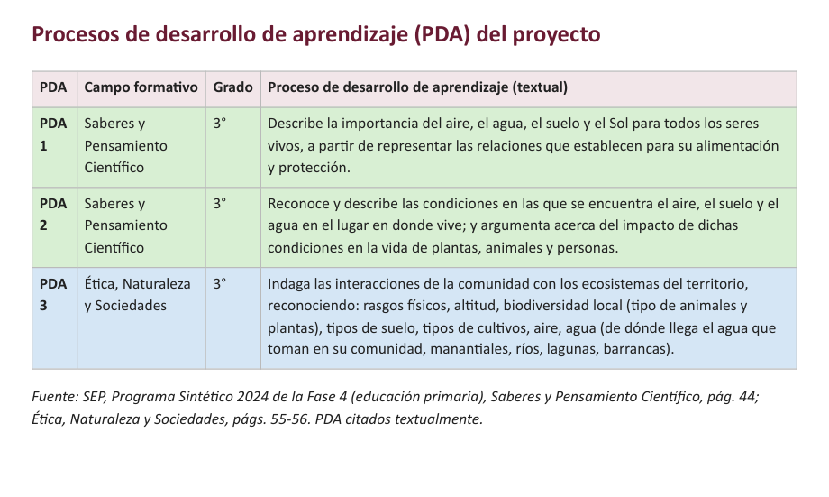
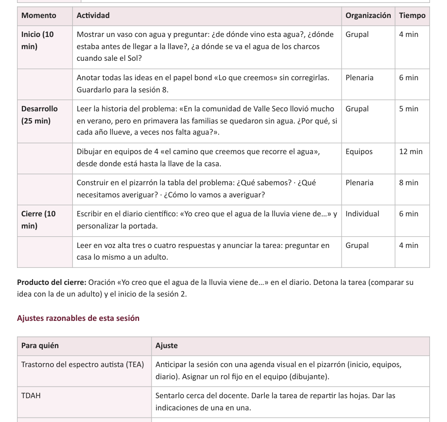
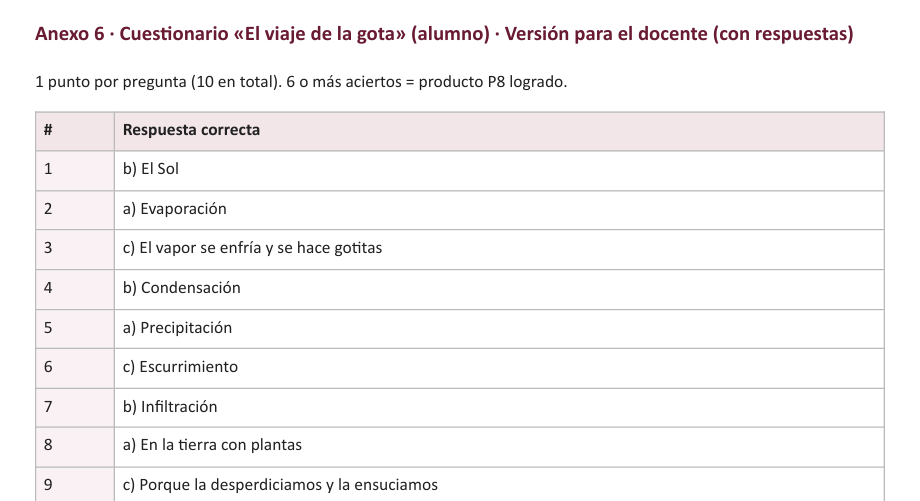

¿Por qué pedir tu planeación con nosotros?
Sabemos cómo es: llega el domingo y en lugar de descansar estás buscando PDA, armando actividades para cada grado y adaptando todo para tus alumnos que lo necesitan. Planear bien un mes se lleva fines de semana enteros. Ese tiempo es tuyo, y queremos devolvértelo.
| Planeación genérica descargada | Tu planeación con nosotros |
| Un solo grado, para «cualquier» grupo | Tus grados juntos, con actividades para cada uno |
| Ajustes para alumnos con BAP: tú los haces | Ajustes razonables en cada sesión |
| Tareas que muchas veces piden internet | Tareas sin internet, del tiempo que tú elijas |
| Sin respuestas: calificas a mano | Hojas con respuestas y registro en Excel que calcula solo |
| Si no te sirve, ni modo | La primera, gratis, y 2 cambios incluidos |
Por $149 tienes un mes completo planeado: menos de $5 al día para recuperar tus domingos.
Lo que trae tu planeación
Así se ve (ejemplo real)

Los PDA del proyecto, a colores y con su fuente.

Cada sesión: actividad, organización del grupo, minutos y ajustes por condición.

Hojas con respuestas para calificar rápido.
👀 Ver la planeación de ejemplo completa (PDF)
¿Cómo la pido?
Precios
| 🎁 Tu primera planeación (hasta 3 grados, 1 semana) | GRATIS |
| A tu medida, hasta 1 mes (los grados que quieras) | $149 |
| 2 meses | $229 |
| Trimestre (15 % de descuento) | $263 |
| 6 meses (15 % de descuento) | $467 |
Pago por transferencia u OXXO. Confirmamos tu pago en hasta 36 horas y, una vez confirmado, tu planeación de hasta 1 mes te llega en máximo 6 horas. Incluye de regalo tu registro del grupo en Excel y 2 cambios después de la entrega.
Preguntas frecuentes
¿Necesito Telegram?
No. Todo se hace en el chat de esta página: contestas las preguntas, ves tu propuesta y recibes tus archivos ahí y en tu correo. Si prefieres Telegram, también estamos ahí: abrir en Telegram.¿Es material oficial de la SEP?
No somos la SEP ni estamos afiliados a ella. Elaboramos material original a partir del Programa Sintético 2024 de la SEP y citamos los PDA textualmente, con su página.¿Pueden usar el formato de mi escuela?
Sí. Nos lo mandas en foto, Word o PDF y lo llenamos con todos sus apartados.¿Cuánto tarda?
Hasta 1 mes de planeación: confirmamos tu pago en hasta 36 horas y, una vez confirmado, te llega en máximo 6 horas. Pedidos más largos, de 2 a 5 días. Tu primera planeación gratis, entre 1 y 30 horas.¿Toman fotos de mis alumnos?
Nunca. Las evidencias que sugerimos son de los trabajos, no de los niños.Paquetes de diciembre · $49 cada uno
Uno por grado, de 1° de preescolar a 3° de secundaria: proyecto de 1 semana (5 sesiones) sobre las celebraciones y tradiciones de fin de año en la comunidad, laico y con respeto a la diversidad. Con PDA oficiales, ajustes para alumnos con TDAH o autismo, tarea sin internet, hojas con respuestas y referencias en APA. Word editable y PDF, al momento.
Recursos gratis para tu grupo
🎁 Tu primera planeación es GRATIS
Hasta 3 grados, 1 semana, en nuestro formato. Pídela aquí mismo, sin instalar nada y sin pagar.
¿Más grados, más tiempo o el formato de tu escuela?
Planeación a tu medida desde $149: preescolar, primaria o secundaria, cualquier combinación de grados, en el formato de tu escuela o en el nuestro, con ajustes para tus alumnos con diagnóstico. Antes de pagar te mostramos los temas y cómo los vamos a planear.
Pedir mi planeación